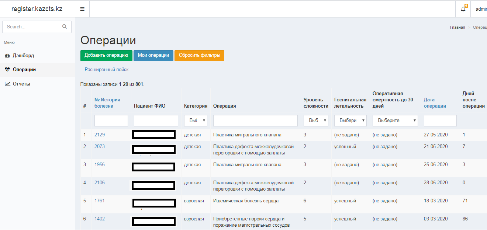
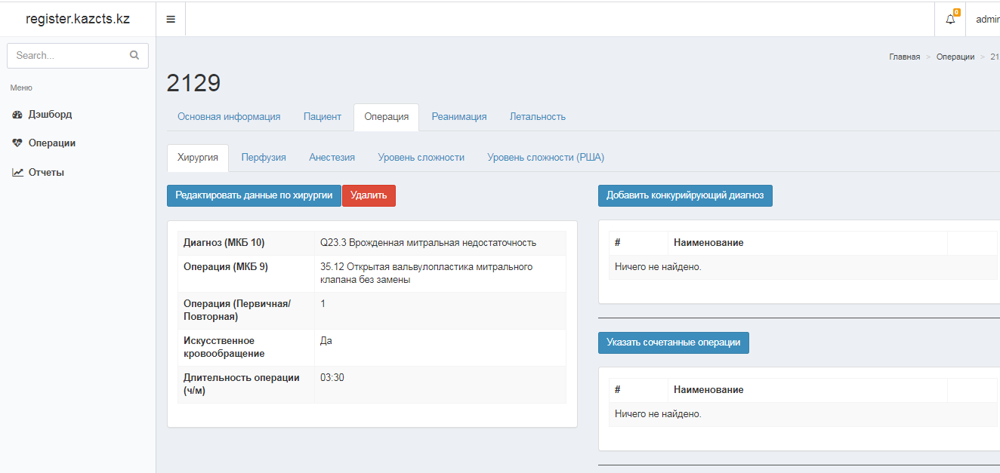
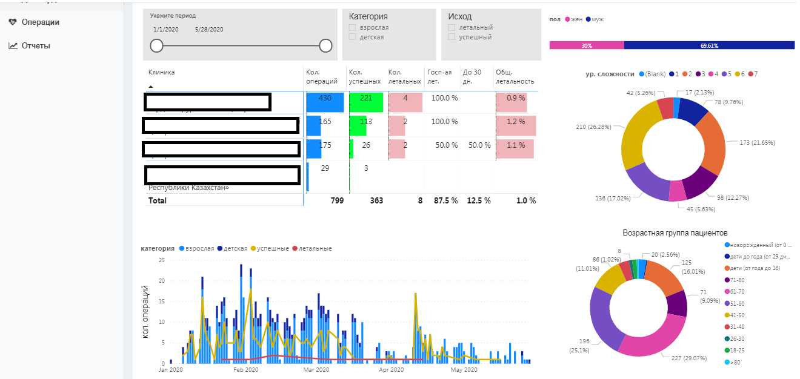
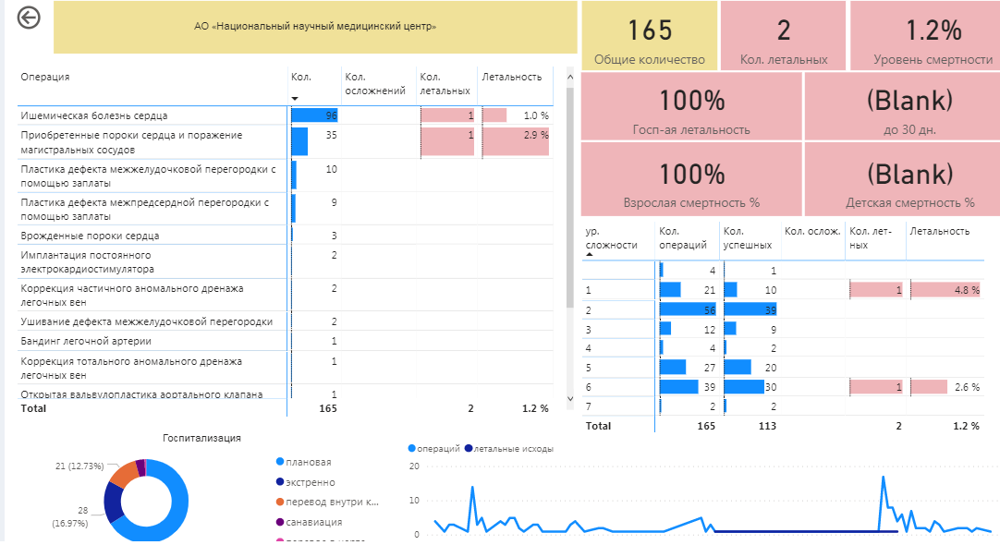
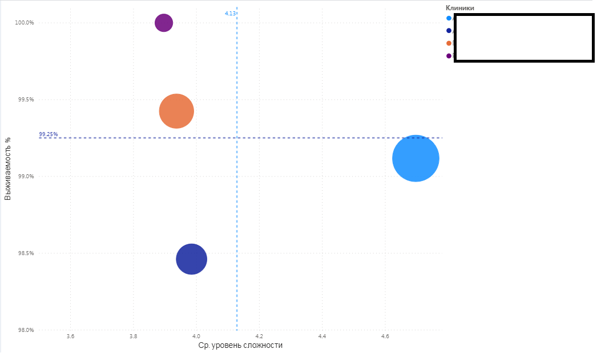

My projects
As part of a small software company (Taimar) I founded with my friend, we have managed to deliver couple of projects.
Republican analytical database of cardiac surgical patients
Register.kazcts.kz
November 2019- March 2020
Technology: PHP (Yii2), MySql, Apache + Nginx + Power Bi
4 clinics plugged in, as of May 2020
The system keeps records of all cardiac surgeries performed in a clinic. Helps to analyze successful cases as well as lethal ones. Enables medical employees to deep dive into details, identify common patterns and better understand what factors lead to successful/unsuccessful outcomes.
The system allows to capture detailed information about patient, performed surgery, any complications happened during the operation and other medical data.
Based on information inputed, the system will calculate the difficulty-level of operation performed. This information is further used when performing data analysis.
To perform data & analysis, large number of real-time operational dashboards and reports exist in the system.
Discovered insights help medical employees to quickly react and apply corrective measures.
Instantly available real-time reports helps to understand the strengths and weaknesses of each clinic. Which, then leads to organizing experience and knowledge sharing sessions as well as special trainings across and between clinics to overcome problems identified.
Apart of the frontend, the system has special backend for administrative personnel, where different kind of administrative tasks can be configured.